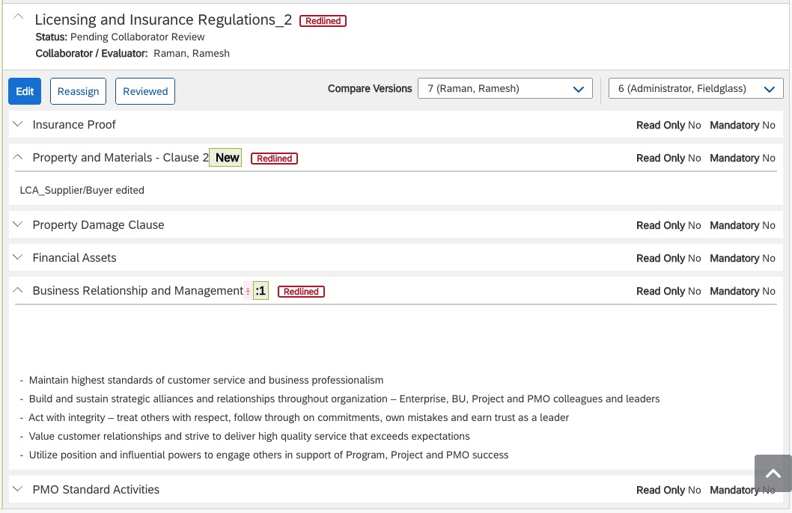
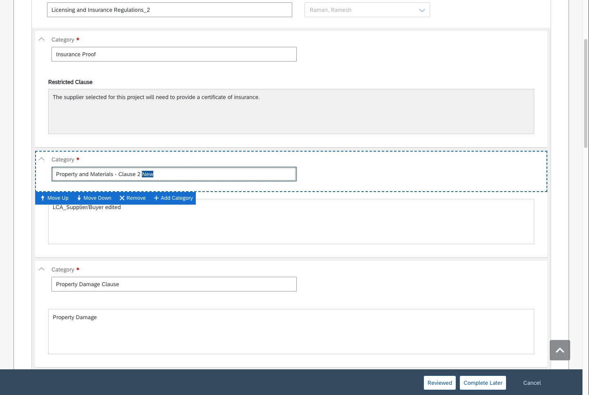
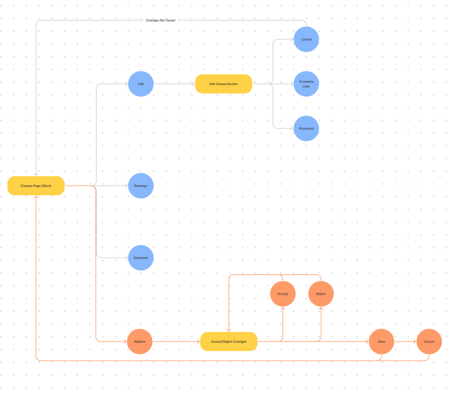
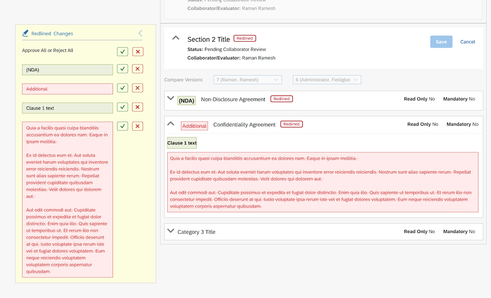
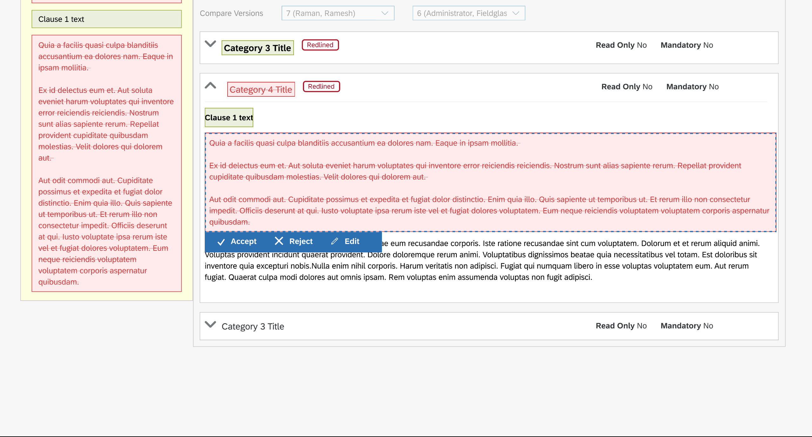
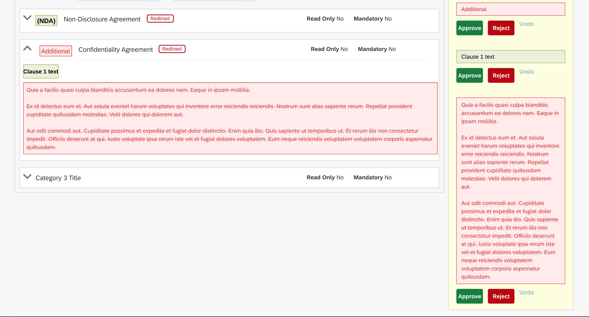

When a company looking to hire a service (buyer) and staffing company (supplier) are drafting a statement of work (SOW) they make suggests changes to clauses. These buyer can view the suggested changes, but there is no way to implement them.
Speaking with the implementation team provided valuable insight into the process of redlining SOW clauses and the issues that clients face.
In order to implement the suggested chages, the buyer company would have to have one tab open to view the suggested changes (pictured above) while simultaneously having a tab open where they could make edits (pictured below).
"The MSP/Client claim that this is not helpful (to only view changes) and causes them to have separate tabs open in order to fully review the clause before completing their edits."
I created a flow chart to illustrate the current workflow and the proposed workflow.
To eliminate this workaround, I brainstormed ideas to eliminate the workaround. The proposed change was to provide the client a way to accept or reject a change immediately after they view the suggestion.
Based on this idea, I created various mockups to demonstrate different ways to accept or reject changes along with an image depicting the proposed workflow.
  I am currently working on this project and will be presenting these ideas to the client soon to get their feedback.